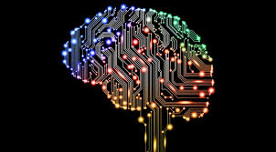

|
WHY IS AI IMPORTANT?
AI automates repetitive learning and discovery through data. But AI is different from hardware-driven, robotic automation. Instead of automating manual tasks, AI performs frequent, high-volume, computerized tasks reliably and without fatigue. For this type of automation, human inquiry is still essential to set up the system and ask the right questions.

AI adds intelligence to things. It seems like AI will not be sold as an individual application. Rather, products we already use will be improved with AI capabilities like Siri.
AI adapts through progressive learning algorithms to let the data do the programming. AI finds structure and regularities in data so that the algorithm acquires a skill: The algorithm becomes a classifier or predictor. So, just as the algorithm can teach itself how to play chess, it can teach itself what product to recommend next online. And the models adapt when given data. Back propagation is an AI technique that allows the model to adjust, through training and data, when the first answer is not quite right.
AI analyzes more and deeper data using neural networks that have many hidden layers. Building a fraud detection system with five hidden layers was almost impossible a few years ago. All that has changed with incredible computer power and big data. You need lots of data to train deep learning models because they learn directly from the data. The more data you can feed them, the more accurate they become.
AI achieves incredible accuracy through deep neural networks-which was previously impossible. For example, your interaction with Alexa, Google Search and Google photos are all based on deep learning- and they keep getting more acuurate the more we use them. In the medical field, AI techniques from deep learning, image classification and object recognition can now be used to find cancer on MRIs with the same accuracy as highly trained radiologists.
AI gets the most out of data. WHen algorithms are self-learning, the data itseld can become intellectual property. The answer are in the data; you just have to apply AI to get them out. Since the role of data is now more important than ever before, it can create a competitive advantage. ıf you have the best data in a competitive industry, even if everyone is applying similar techniques, the best data will win.
|